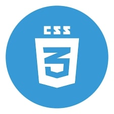

Skills


Passionate Python and front-end developer skilled in Pandas, NumPy, Matplotlib, HTML, CSS, and JavaScript, with expertise in building ARIMA models for time-series forecasting and interactive web applications. Eager to create innovative, data- driven solutions and user-friendly interfaces to solve real- world problems. Committed to collaborating with dynamic teams to optimize processes, enhance user experiences, and drive business growth in a fast-paced, technology-driven environment.
| Education level | Institute Address | Percentage / CGPA | Period |
|---|---|---|---|
| B.Tech (CSE) | Raghu Institute of Technology, Dakamarri, Vizag | 79.68% / 8.38 | 2021-2025 |
| Intermediate | Tirumala, Katheru | 90.2% / 902 | 2019-2021 |
| SSC | Tirumala, Katheru | 90.25% / 9.5 | 2018-2019 |
This project is a responsive web-based calculator built using HTML, CSS, and JavaScript. It allows users to perform basic arithmetic operations such as addition, subtraction, multiplication, and division. The interface is clean, modern, and mobile-friendly, making it suitable for use on desktops, tablets, and smartphones.
It features:
This project is a browser-based Tic Tac Toe game designed for two players (Player X and Player O). It's developed with responsive design principles, smooth styling, and interactive features to provide an engaging experience on both desktop and mobile devices.
The game allows players to:This project is a real-time analog and digital clock web application that visually represents the current time with both rotating clock hands (analog) and a live-updating numeric display (digital). Designed with responsive styling, the clock seamlessly adapts to different screen sizes—from mobile devices to large desktops.
The goal of the project is to demonstrate time-based animations and dynamic DOM manipulation using JavaScript, while presenting a visually appealing and modern user interface with CSS.
The project focuses on developing an efficient and accessible weather forecasting system, particularly for short-term predictions. It aims to offer an alternative to traditional Numerical Weather Prediction (NWP) models, which are computationally intensive. The core of the proposed system leverages Autoregressive Integrated Moving Average (ARIMA) models, combined with other machine learning techniques.
Key Features of the Project:A "Learn-ATM" application, which simulates the functionalities of an Automated Teller Machine (ATM). It's a desktop application built using Python's Tkinter library, providing a graphical user interface for various banking operations. The application manages user accounts (cards) with features like balance, PIN, transactions, and contact information. It also includes an admin panel for viewing and exporting customer data.
Key Features of the Project:The SupermarketApp is a Python-based desktop application that simulates an online supermarket shopping experience. It provides a graphical user interface (GUI) where users can browse products, add items to a cart, toggle between INR and USD currencies, proceed to checkout with multiple payment options, view their orders, and manage their profile. The app also sends email confirmations for orders and payments using an SMTP server (Gmail in this case).
Features of the Project: